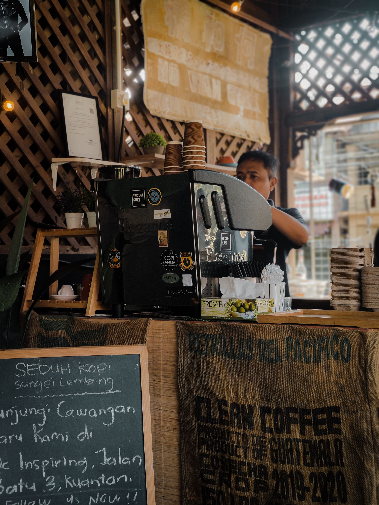

Selamat Datang
Kedai kopi sederhana untuk tempat singgah, ngobrol, atau ngerjain tugas dengan menu kopi dan non-kopi harian.

Jam Buka
- Senin - Jumat: 08.00 - 22.00 WIB
- Sabtu: 10.00 - 23.00 WIB
- Minggu: Tutup
Kedai kopi sederhana untuk tempat singgah, ngobrol, atau ngerjain tugas dengan menu kopi dan non-kopi harian.
